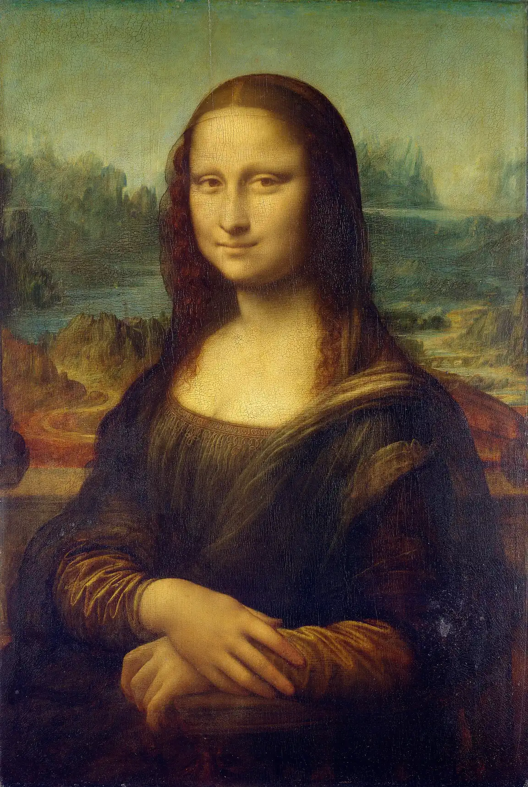
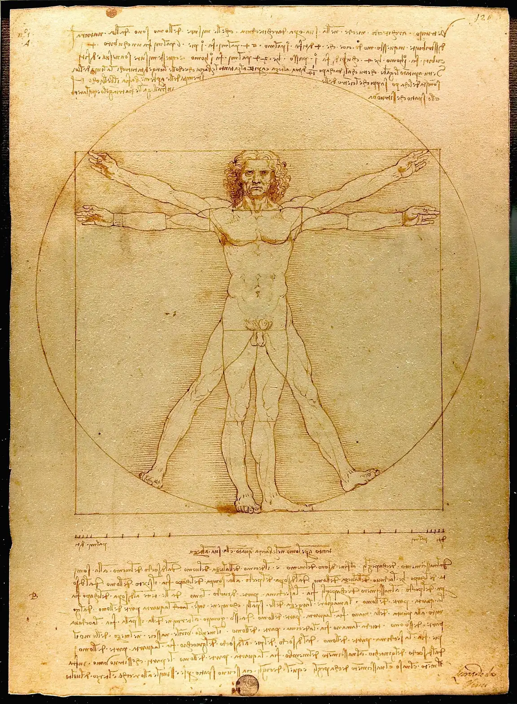
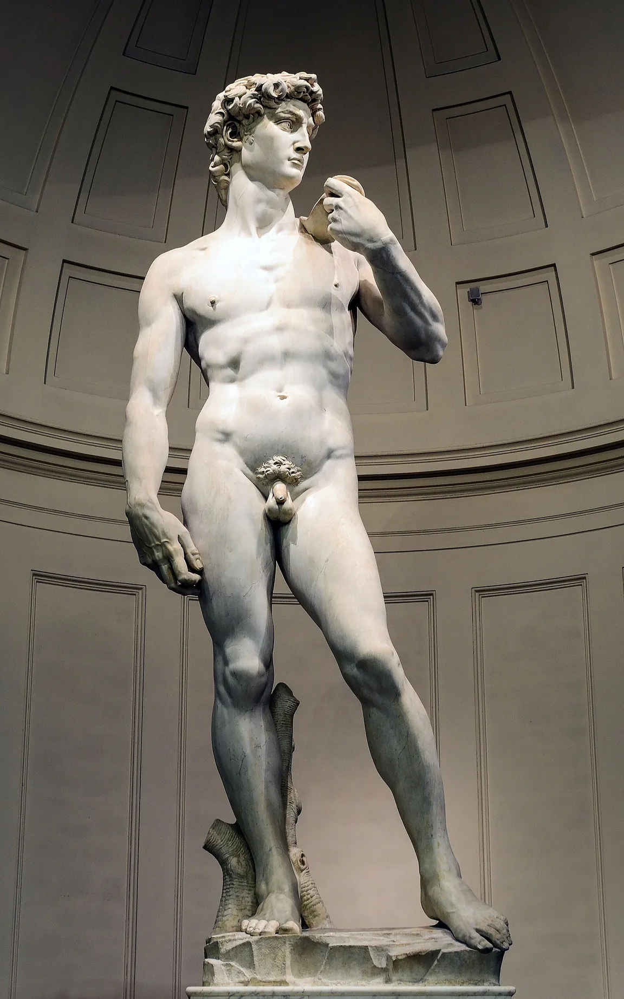
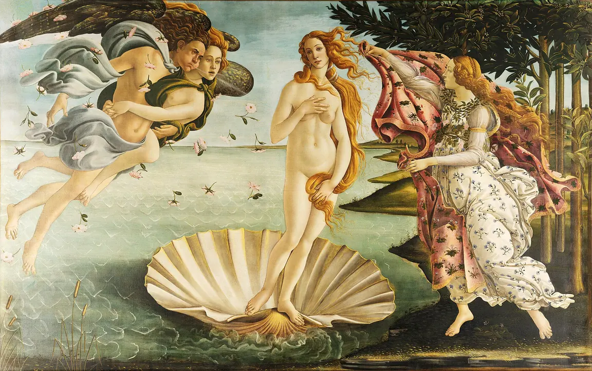
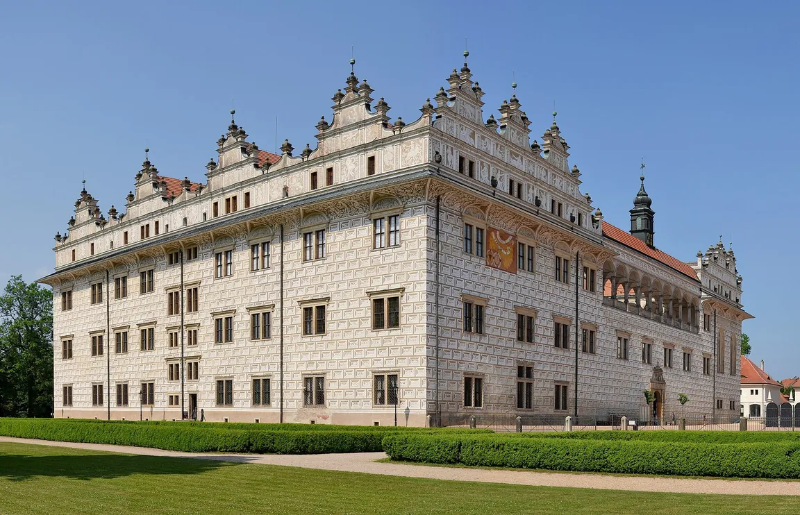
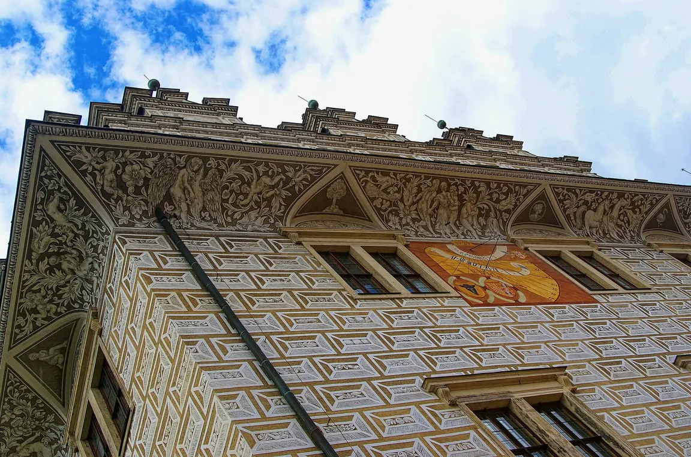
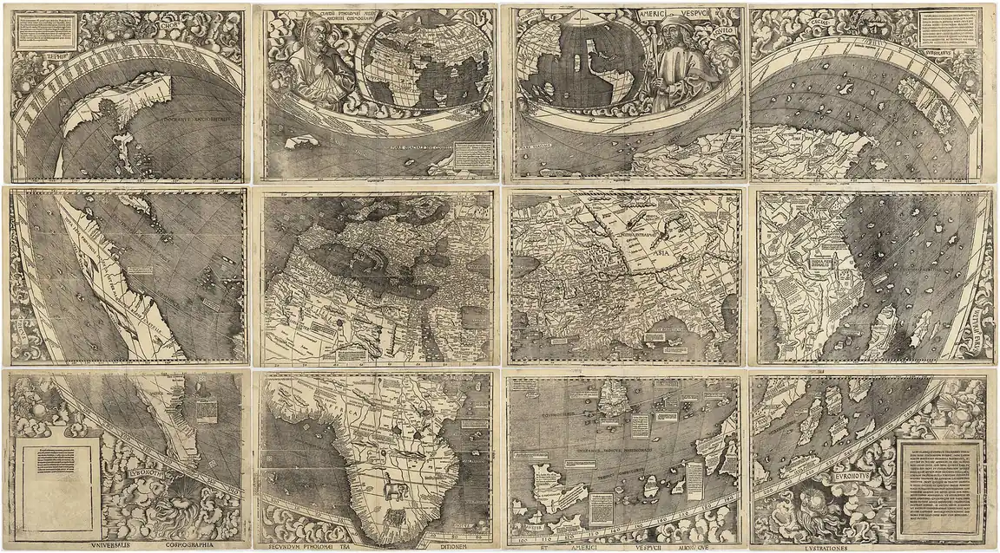

Na východ kolem Afriky
Portugalci postupovali podél Afriky: Bartolomeu Dias obeplul její jižní cíp (1488), Vasco da Gama doplul do Indie (1498).
Pro 8. ročník: objevné plavby, jejich důsledky a kultura renesance.
Koření, hedvábí a další zboží z Asie se do Evropy dováželo po souši. Roku 1453 ale Turci dobyli Konstantinopol a obchodní cesty na východ ovládli a ztížili. Evropané proto hledali námořní cestu do Indie. Vyplout na otevřený oceán jim umožnily kompas (směr), astroláb (poloha podle hvězd) a karavela (obratná loď).
Portugalci postupovali podél Afriky: Bartolomeu Dias obeplul její jižní cíp (1488), Vasco da Gama doplul do Indie (1498).
Kryštof Kolumbus doplul roku 1492 k ostrovům Ameriky, ale myslel si, že je v Indii. Magalhãesova výprava (1519–1522) poprvé obeplula svět.
Zrodila se v Itálii ve 14. století. Humanismus stavěl do středu zájmu člověka a vzdělání a vracel se k antice. Leonardo da Vinci, Michelangelo, Koperník; Gutenbergův knihtisk šířil knihy.
Objevy měly velké důsledky. Evropské státy zakládaly kolonie, do Evropy se dostaly brambory, kukuřice, rajčata, kakao a tabák. Pro původní obyvatele Ameriky znamenaly objevy epidemie, podrobení a zánik říší Aztéků a Inků. Typická chyba: „objev“ je pohled Evropanů – v Americe přece lidé žili už dávno.
Seřaď od nejstarší: Vasco da Gama doplul do Indie, Turci dobyli Konstantinopol, vyplula Magalhãesova výprava kolem světa, Bartolomeu Dias obeplul jižní cíp Afriky.
✅ pád Konstantinopole (1453) → Dias (1488) → Vasco da Gama (1498) → Magalhãesova výprava (1519)
Skutečná díla a stavby z doby renesance. Všímej si, jak se umělci vracejí k antice a zajímají se o člověka a přírodu.







Objevné plavby umožnily kompas, astroláb a karavela. Renesance se zrodila v Itálii ve 14. století a přinesla humanismus – zájem o člověka, přírodu a antickou vzdělanost.